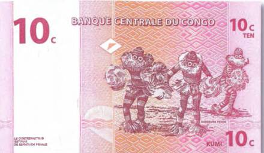
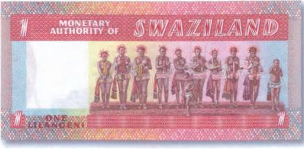
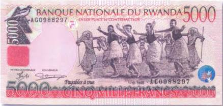
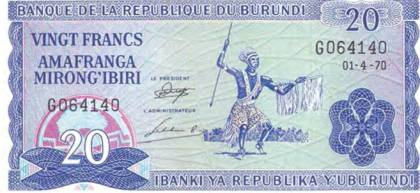
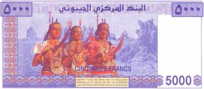
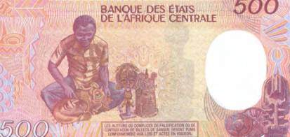
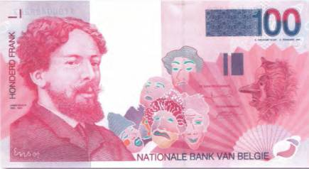
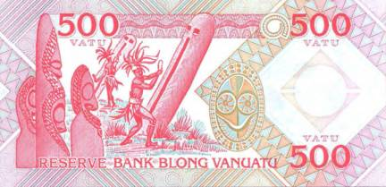
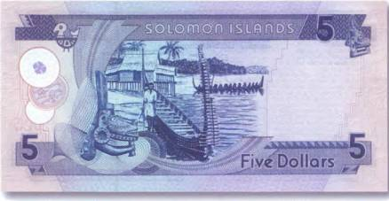
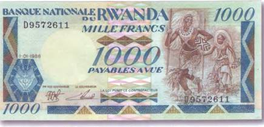

Тайны бумажных денег : Ритуальные танцы и общение с духами предков

Жизнь большинства африканцев также неразрывно связана с магией и волшебством. По их мнению, поднебесная населена сонмом духов и демонов, которые только и норовят навредить человеку. Чтобы избежать их козней, люди обращаются за помощью к шаманам и колдунам, которых в Африке, возможно, не меньше, чем тех, с кем они призваны бороться.
Впрочем, за помощью к ведунам и шаманам (в Африке эти функции чаще всего выполняют мужчины) обращаются не только, когда от нечести спасу нет, но и в тех случаях, если в результате затянувшейся засухи гибнет урожай. Например, масаи, чтобы вызвать долгожданный дождь, устраивают колдовские танцы. Изображение танцующих аборигенов из племени пенде можно встретить на боне Демократической Республики Конго в 10 сантимов 1997 г. (рис. 39).

Иногда приверженность к таким ритуалам выливается в довольно комичные ситуации. В феврале 1958 г. племена масаев посетила английская королева. Во время торжественного обеда, организованного в ее честь, королева пожелала племенам скорого дождя, так как незадолго до этого ей сообщили, что живительная влага уже давно не падала с неба. Местные колдуны в буквальном смысле слова сбились с ног, вымаливая у богов дождь. Каково же было удивление масаев, когда часом позже на потрескавшуюся от засухи землю обрушился настоящий ливень! С тех пор Елизавета II превратилась для них в величайшую повелительницу дождя.
Еще одно изображение танцующих африканцев помещено на купюре Свазиленда номиналом в 1 лилангени 1974 г. (рис. 40).
Кстати, в кругах бонистов эта бона и по сей день сохраняет за собой титул самой эротической банкноты мира.

А теперь представьте себе, что произошло бы с теми же самыми аборигенами, если бы дождь хлынул после того, как окончил свой спонтанный танец американский президент Джордж Буш. Это произошло 25 апреля 2007 г. в саду возле Белого дома. В тот день американский президент устраивал торжественный прием, посвященный Дню борьбы с малярией. После официальной части выступали африканские танцоры. Ритм и незнакомая музыка, видимо, настолько сильно захватили главу Белого дома, что он тоже пустился в пляс. Под конец Буш так разошелся, что даже исполнил партию на ударных. Как они выглядят, эти самые африканские ударные, можно узнать, взглянув на банкноту Нигерии в 5 найр 2006 г. (рис. 41).
Рис. 41. Нигерия — 5 найр 2006 г. (151?78 мм)
Как известно, танец танцу рознь. У африканских же народностей на любой случай жизни имеется свой танец. Посвящаются ли они богатому урожаю или являются оригинальным сопровождением массовых свадеб. Например, у некоторых племен в Малави можно стать свидетелем забавных представлений, когда обряженный в лохмотья танцор, поднимая вокруг себя тучи пыли, старается пародировать повадки известных ему и остальным зверей и птиц. Нечто подобное наблюдалось и у североамериканских индейцев, а также у северных народов России. Танцующие аборигены увековечены на банкноте Руанды в 5000 франков 1998 г. (рис. 42).
Второе место после магических плясок у африканцев занимают танцы, которые в прежние времена исполнялись аборигенами непосредственно перед вступлением на тропу войны. А в роли танцоров выступали вооруженные копьями и щитами воины. Как это показано на боне из Бурунди номиналом в 20 франков 1970 г. (рис. 43).


Впрочем, в последние десятилетия в связи с быстрым развитием туризма в Африке акцент таких представлений в корне изменился. Это означает, что аборигены, правда, по-прежнему демонстрируют свою решимость и смелость перед лицом врага, но их бряцанье оружием теперь уже превратилось в неотъемлемую часть театральных представлений, которые устраиваются почти исключительно для туристов. Кстати, с оружием в руках сегодня можно увидеть не только мужчин, но и представительниц слабого пола. Сценка из такого шоу запечатлена на актуальной банкноте государства Джибуги в 5000 франков 2000 г. (рис. 44).
Но вернемся к африканским магам и колдунам. Их положение в иерархии многих африканских племен по-прежнему незыблемо. Иначе и нельзя. Ведь они нередко берут на себя роль посредников между миром живых и миром мертвых. В погребальных церемониях некоторых племен чародеи надевают на себя белые маски [11], представляя таким образом дух усопшего. После проведения ритуала эти маски просто выбрасываются. Кстати, по незнанию многие туристы, обнаружив такую маску где-нибудь в лесу, берут ее себе в качестве реликвии. Делать этого не стоит хотя бы по той самой причине, что эта вещь являлась деталью погребальной церемонии и успела накопить в себе достаточно много негативной энергии. Ведь она специально заряжалась шаманом для отправления культовых обрядов. И известно много случаев, когда обладатели таких реликвий потом жаловались на дискомфорт в собственных четырех стенах. А после того как подобранная маска изымалась, все возвращалось на свои места. Резчика африканских масок можно встретить на купюре Камеруна номиналом в 500 франков 1990 г. (рис. 45).
Но в отличие от европейцев, у которых такие торжества уже давно превратились в яркие костюмированные шоу с демонстрацией самых невероятных масок (рис. 46) и костюмов для привлечения туристов со всего мира, а значит, и больших денежных средств (девизов), вливающихся в экономику соответствующих стран, у африканских народностей и населения большинства островных государств поклонение и сношение со всевозможными духами, призраками, демонами и другой нечистью по-прежнему остается важным аспектом их повседневной жизни. Это подтверждается и изображениями на национальной валюте. Примером тому может служить купюра островного государства Вануату, расположенного в юго-западной части Тихого океана, номиналом в 500 вату (рис. 47).
На оборотной стороне банкноты, помимо искусно вырезанных масок предков островитян, можно видеть и их обряд общения с духами. Выглядит это так, что аборигены колотят по полым обработанным древесным стволам, в которых вырезаны специальные отверстия (глаза и рты), тем самым вынуждая души умерших обратить на них внимание.



Духу моря Нусу Нусу посвящено изображение на оборотной стороне пятидолларовой банкноты с Соломоновых островов, расположенных в Меланезии, бассейн Тихого океана (рис. 48). Такие маски местные рыбаки устанавливают на своих лодках в надежде на то, что морское божество позволит им благополучно вернуться домой с богатым уловом.

К способам общения с духами предков у многих так называемых примитивных народностей земли относится не только хореография, но и пение. Нередко местные колдуны и ведьмы, совершая продолжительные дикие пляски, впадают в транс — состояние, в котором они могут испытывать порой совершенно невероятные ощущения. Говоря языком современных эзотериков, они выходят в астрал, где, по утверждению специалистов из этой области, границы известного нам бытия раздвигаются, а то и исчезают вовсе. Группа танцующих шаманов запечатлена на руандской купюре номиналом в 1000 франков 1988 г. (рис. 49).

Говоря о торжествах, посвященных нечистой силе, нельзя не упомянуть о проводимом ежегодно в Бенине (Западная Африка) празднике колдовства. С 1997 г. 10 января в этой стране — национальный праздник Вуду. А провозгласил его в 1993 г. тогдашний президент страны Нисефор Согло. Впрочем, тут нет ничего удивительного. Дело в том, что 80 % населения этого по африканским меркам небольшого государства являются приверженцами вудуизма. Сегодня, скорее всего, трудно найти человека, кому бы не был известен этот магический культ, зародившийся на Черном континенте в стародавние времена. Слово «вуду» на наречии многих западноафриканских племен означает «дух». В день праздника Вуду в стране устраивается грандиозная ярмарка, где собирается много колдунов и шаманов со всего мира и еще больше туристов. Купить там можно все, что так или иначе связано с колдовством или целительством — от обыкновенных ритуальных кукол вуду, порой уже «препарированных» иглами, до самых экзотических шаманских снадобий.
Вместе с чернокожими рабами из Африки религия вуду в прошлые века перекочевала в Америку, где быстро пустила корни на благодатной почве самых разных местных верований. Особенно ярко соединение мистических культур Африки и Нового Света проявилось в обрядах, связанных с так называемыми живыми мертвецами или зомби.